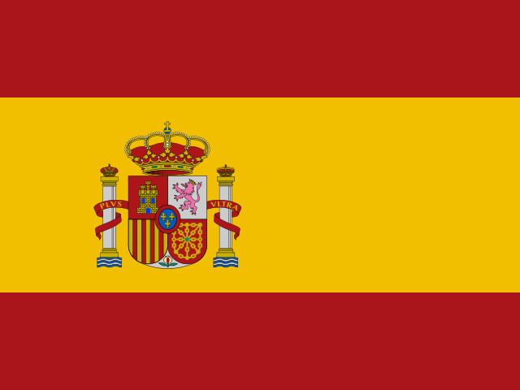

Você está acessando um ambiente experimental da Irricontrol. Esta plataforma é destinada exclusivamente a testes, simulações e validações internas.
Centrais: 0
Ative o JavaScript para usar o simulador.